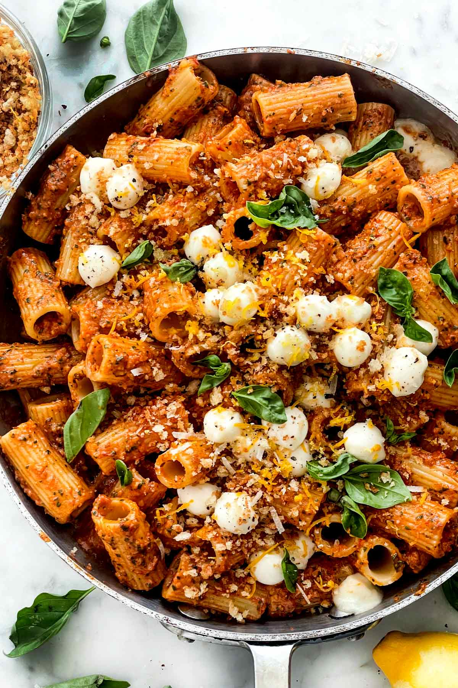

HOME
Verdens beste pasta

Ingredienser
- Ca 400g pasta
- To bokser rød pesto med chili
- En løk
- Hvitløk
- Cherrytomater
- Soltørkede tomater
- To mozzarella
- To halloumi
- Parmesan
Fremgangsmåte
- Kutt opp halloumien og begynn å stek den
- Mens halloumien steker, kutt opp alle grønnsakene
- Kok opp pastaen
- Fres løk og hvitløk
- Tilsett tomater, soltørkede tomater og halloumi
- Ta oppi den ferdigkokte pastaen
- Bland inn pestoen og litt pastavann
- Tilsett mozzarellaen og parmesanen